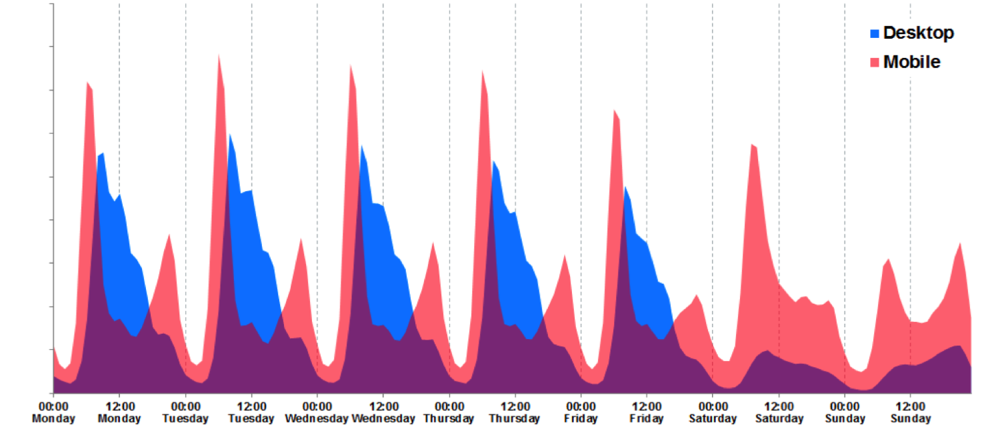
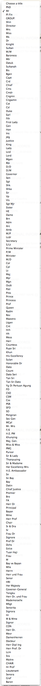
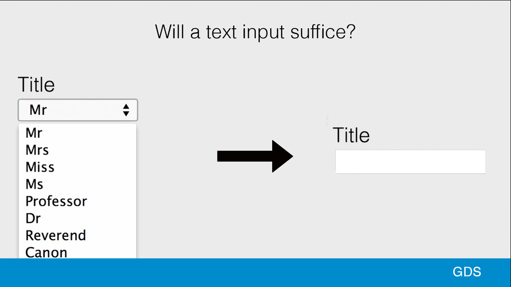
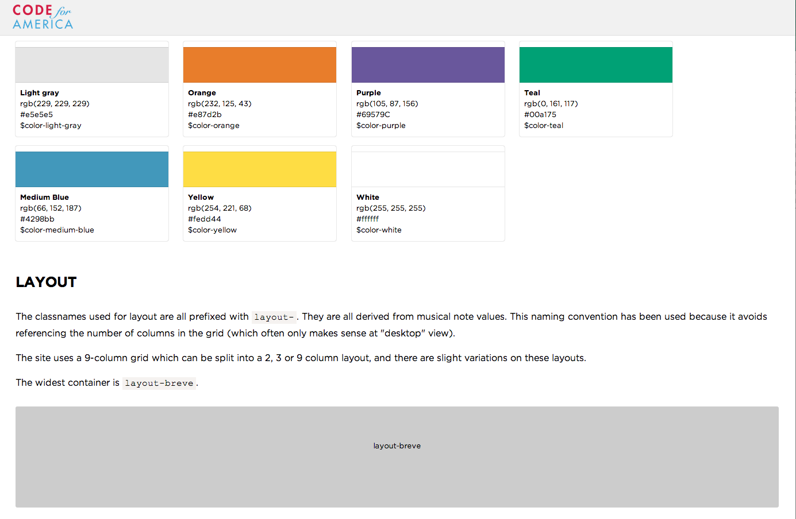
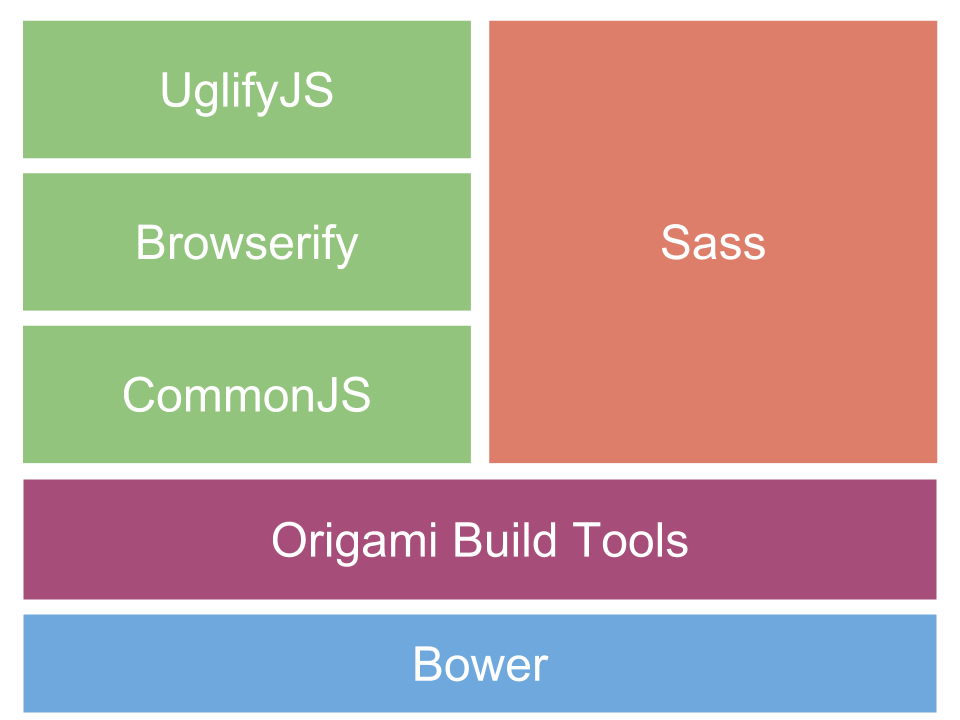
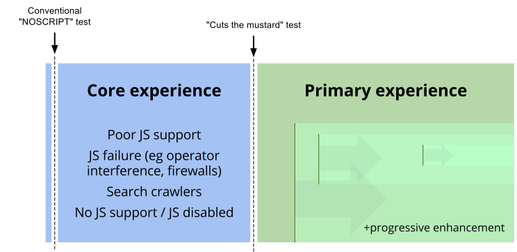

Today's schedule
| 1500 | Origami Overview | Andrew |
| 1540 | UI components | Alberto |
| 1620 | Web services | Sam |
| 1640 | Hands-on workshops | Andrew, Alberto, Sam, Kaelig |
Origami workshop
A practical journey to Web Components
by Andrew Betts, FT Labs (trib.tv / @triblondon)
Challenges
Building websites is harder today than ever before. Why?
Multiple formats
Multiple formats


Better usability

We are not here to do easy things for people who are like usAlice Bartlett
Problems at FT
Meeting the challenges of modern front end development can lead to problems
Problems
- Repeating work
- Unable to let go of old tech
- Experts needed everywhere
- Square pegs, round holes
- Learning 'cliff'
Goals
What should we be aiming for?
Consistent brand experience
Not just about being responsive
(we have lots of websites to make responsive)
Living style guides
Objectives
Components
Standards
Collaboration
Encapsulation
Works with the old stuff
Don't build a monolith
Raise the bar
Make it easy
Full set of principles available at origami.ft.com
The Origami way
How does Origami meet these goals?
Origami is...
- A Specification (origami.ft.com)
- Tools
- Registry
- Build service
- Components!
- Modules (installable packages)
- Web services (APIs)
The spec
Agree a standard for building modules and services
Module build pattern
"Cutting the mustard"
A simple logical test that sets a movable bar for running application JavaScript
if ('querySelector' in document && 'localStorage' in window && 'addEventListener' in window) { ... }
Syntax and encapsulation (JS)
- No globals
- No modifying DOM on parse (or outside of owned DOM)
- Namespace events
- jsHint
Syntax and encapsulation (CSS)
- Namespace prefixes for classes
- No styling out of namespace
- No IDs, ever
- Minimise specificity. Use BEM or descendent selectors
o-tweet__avatar--verifiedo-tweet > p
- Consider
states (use ARIA):- hover, focus, busy, selected, disabled, active, invalid, pressed, expanded
- Express responsive behaviours by exposing mixins, not using media queries:
o-tweet--large,o-tweet--small

The tools
Make it easy to comply with the spec requirements
Build tool
> origami-build-tools install
Build modules in your own product
Serve them locally
Compile as part of your own JavaScript and CSS bundles
Auto-install all dependencies, tools, linters etc.
Registry
Scan known git servers
Index version tags
Build every version of every module
Collect all the info on one page
Act as a directory of web services
Origami registry is public on the web so anyone can collaborate with us
Build service
http://build.origami.ft.com/bundles/js
?modules=o-tweet,o-ft-header@^1.3.7,o-hoverable@2
Build any combination of modules on demand
Build, bundle, compress, optimise, serve through CDN (gzipped)
Lock to a version or automatically upgrade with semver-compliant versioning
Allow developers to work without a build step
Build process walkthrough
Build a page using Origami components
That's it!
Contact me:
- Email: andrew@labs.ft.com
- Twitter: @triblondon, @ftlabs
For jobs in London, visit labs.ft.com/jobs